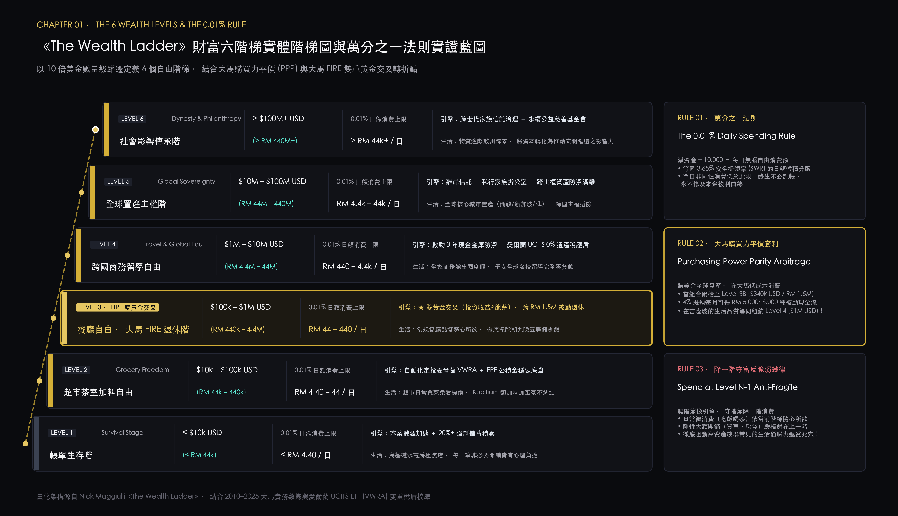
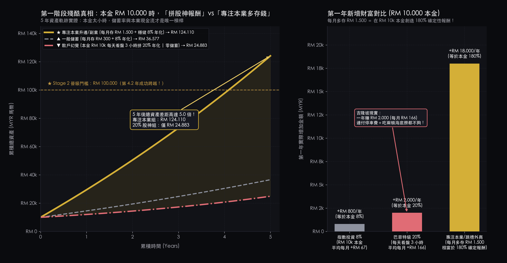
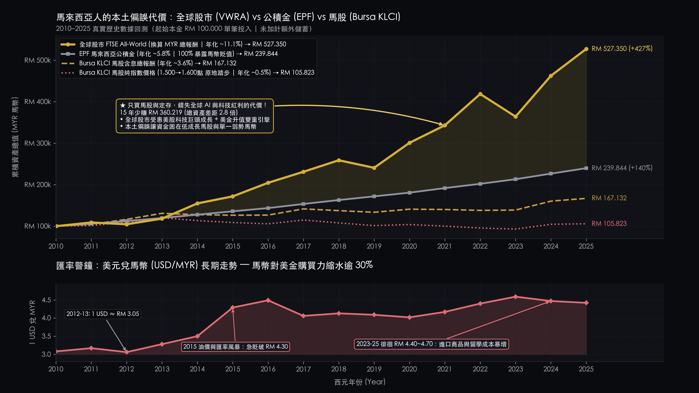
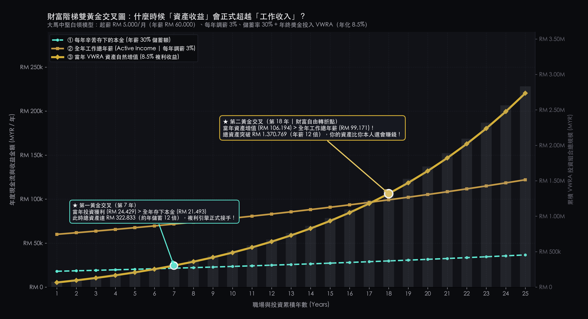
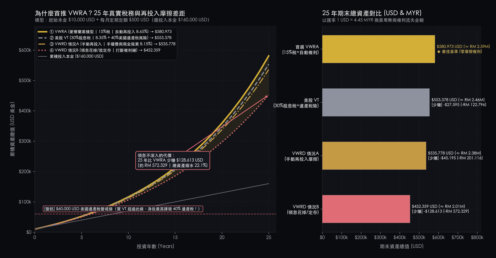
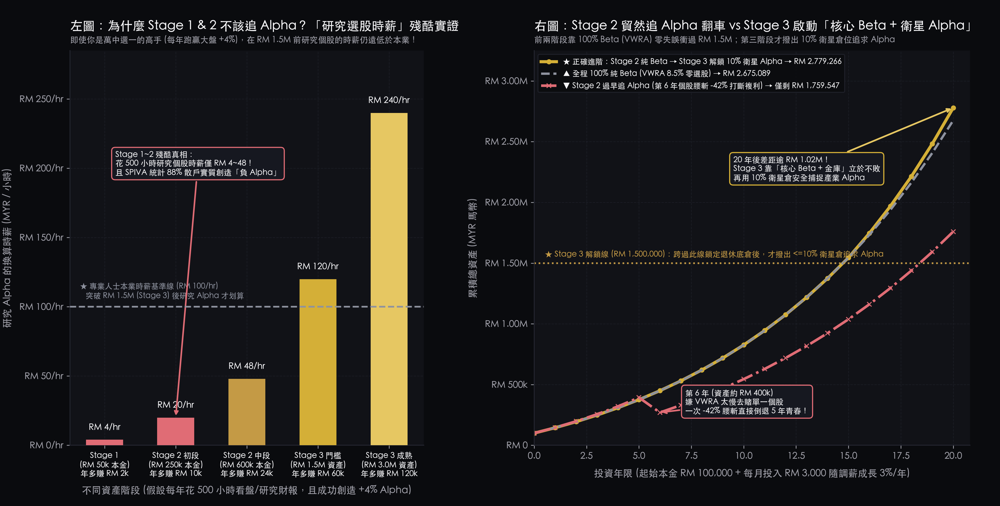
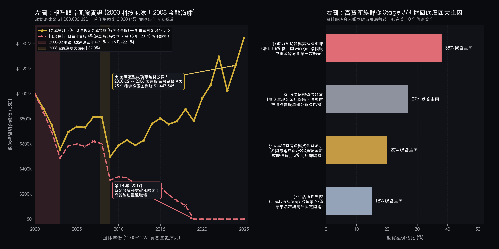

從十萬馬幣築底、雙重黃金交叉，
到永不破產的退休現金金庫
From RM 100k Capital Foundation & Structural Crossover to a Perpetual Cash Vault
結合 2010–2025 大馬真實數據、《The Wealth Ladder》6 階理論與愛爾蘭 VWRA 稅務優勢，建構從築底到傳承的量化藍圖。 A quantitative roadmap from capital accumulation to generational wealth with VWRA, EPF, and 4% Cash Vault architecture.
《The Wealth Ladder》財富六階梯與萬分之一法則 The 6 Wealth Levels & The 0.01% Rule — USD/MYR Brackets & PPP Advantage
以 10 倍美金數量級定義 6 個財富等級與「萬分之一法則（淨資產 ÷ 10,000 ＝ 每日無腦消費額）」，結合大馬購買力平價（PPP）打造實戰框架。 Defining 6 orders of magnitude of net worth and the 0.01% daily spend rule, optimized for Malaysian living costs.
《The Wealth Ladder》實體六階躍遷階梯 · 點擊任一階梯即時聯動下方定位儀
[ 展開出版級 300-DPI 全景架構圖 (FIG 00 · High-Res Blueprint) ] ▼

我的 6 階財富定位與萬分之一法則計算機
萬分之一法則 ＝ 4% 退休提領率的「每日微積分版」
低於淨資產萬分之一的單次升級（加菜、買書、升等）由股市自然增值買單，核心價值在於消滅小錢內耗、保護大腦決策頻寬。
大馬跨階套利：為何美國人要到 L4 才自由，大馬人 L3B 就破關？
透過 VWRA 賺美元指數、花馬幣物價，當資產達 Level 3B ($340k USD / RM 1.5M) 時，在大馬的生活自由度已等同紐約客的 Level 4 ($1M USD)。
爬階靠「換引擎」，守階靠「降一階定常消費」
中產返貧皆因把萬分之一單次額度變成剛性車貸房貸。鐵律：資產在 Level N，固定開銷鎖死在 Level N-1，單次犒賞才用 0.01%。
TABLE 01 · 展開《The Wealth Ladder》6 個財富等級 × 萬分之一法則 × 大馬實戰完整對照表 (The 6 Wealth Levels Matrix) ▼ EXPAND MATRIX
| 階梯 (Level) | 美金數量級 (USD) | 馬幣對照 (MYR) | 0.01% 日額 (Daily) | 消費自由 (Lifestyle) | 破局引擎 & 致命陷阱 (Strategy & Pitfalls) |
|---|---|---|---|---|---|
| Level 1 | < $10,000 | < RM 44k | < $1/日 (< RM 4.4) | 帳單生存期 (Survival) | 清償卡債 + 6 個月預備金 (MMF)｜忌賭仙股 (Penny Stocks) 與高倍槓桿 |
| Level 2 | $10k – $100k | RM 44k–442k | $1–$10/日 (RM 4.4–44) | 超市與茶室加料 (Grocery) | 本業升遷拉高儲蓄 + 100% VWRA｜忌天天盯盤當沖 (Day Trading) |
| Level 3 ★ | $100k – $1M | RM 442k–4.42M | $10–$100/日 (RM 44–442) | 餐廳自由 × 大馬 FIRE 區 | 3A 純 Beta；3B 建 3 年金庫 (Cash Vault) + ≤8% Alpha｜忌只買馬股 |
| Level 4 | $1M – $10M | RM 4.42M–44.2M | $100–$1k/日 (RM 442–4.4k) | 跨國商務艙與留學 (Travel) | 愛爾蘭 UCITS 避開 40% 美股遺產稅 (Estate Tax)｜忌重金跨界創業 |
| Level 5 | $10M – $100M | RM 44.2M–442M | $1k–$10k/日 (RM 4.4k–44k) | 全球置產主權 (Real Estate) | 離岸家族信託 (Offshore Trust) 與多幣別配置｜忌負現金流虛榮資產 |
| Level 6 | > $100M+ | > RM 442M+ | > $10k+/日 (> RM 44k+) | 社會影響力 (Philanthropy) | 單一家族辦公室 (SFO) 治理｜忌家族爭產與企業連帶擔保 |
築底期 (Foundation) — 為什麼本金少時，你不該天天看盤選股？ Why Active Stock Picking Fails at Early Capital Stages
本金僅 RM 10,000 時，決定財富速度的從來不是選股報酬率，而是本業職涯現金流與儲蓄率 (Active Career Income Alpha)。 At sub-RM 100k net worth, wealth velocity is driven by career earnings and savings rate, not speculative trading.
每天盯盤 3 小時就算打出巴菲特級 20% 報酬，一年也僅多賺 RM 2,000。
精進本業每月多存 RM 1,500 買入 VWRA，5 年資產達 RM 124,110（散戶組 5 倍）。
預備金放 Versa / GO+ 貨幣基金享 ~3.6% 收益，閒錢設定自動扣款後即可關掉看盤軟體。

TABLE 02 · 展開 5 年期末資產量化對照表 (起始本金 RM 10,000 · 5-Year Capital Model) ▼ EXPAND DATA
| 策略路徑 (Strategy) | 每月定投 (Monthly DCA) | 年化報酬 (CAGR) | 第 1 年新增 (Y1 Gain) | 5 年後總資產 (Ending Wealth) |
|---|---|---|---|---|
| 散戶盯盤拼仙股 (Active Stock Picking) | RM 0 | 20.0% | +RM 2,000 | RM 24,883 |
| 微薄儲蓄 (Low Savings Rate) | RM 300 / 月 | 8.0% (VWRA) | +RM 4,536 | RM 36,577 |
| 專注本業 + 指數 (Career Alpha + Beta) | RM 1,500 / 月 | 8.0% (VWRA) | +RM 19,440 | RM 124,110 |
放大期上篇 — 本土偏誤代價與「雙黃金交叉」轉折點 Acceleration Stage I — Home Bias Costs & The Dual Structural Crossovers
跨越十萬馬幣後，若只買馬股與定存，資產將被匯率貶值與低成長雙重吞噬。 Beyond RM 100k, domestic market concentration exposes portfolios to currency drag and stagnant growth.
匯率由 3.05 貶至 4.10–4.70 區間，進口商品、科技與海外留學成本全面飆升。
2010–2025 年間，RM 100k 投入全球股市成長至 RM 527k，是馬股與 EPF 的兩倍以上。
第 7 年達成「第一交叉 (Return > Annual Savings)」；第 18 年達成「第二交叉 (Return > Annual Salary)」。


放大期下篇 — 為什麼首推愛爾蘭 VWRA？ Acceleration Stage II — The UCITS Tax Architecture of VWRA
選錯 ETF 註冊地，25 年將少賺 25%–35% 退休金，並暴露於 40% 美國遺產稅 (US Estate Tax)。 Suboptimal ETF domicile forfeits 25%–35% in compounding returns and triggers up to 40% US estate tax risk.
大馬人買美股 VT 預扣 30% 股息稅；改買倫敦上市愛爾蘭註冊 VWRA 僅扣 15%。
直接持有 VT / VOO 超過 $60,000 USD（≈ RM 265,200）身故最高課 40%。
消滅手動買回手續費、匯差與人性花掉股息的漏損，終值多出 $128,613 USD。

美股 40% 遺產稅與股息稅漏損試算 (US Tax Drag Simulator)
拖曳滑桿比較當海外組合長大時，持有美股註冊 ETF（VT / VOO）與愛爾蘭註冊 VWRA 的稅務曝險差距：
全球股票 ETF 終極規格對照表 (ETF Specification Matrix)
TAX RESIDENCY PERSPECTIVE| 評估維度 (Feature) | VWRA (首選 · Accumulating) | VWRD (配息 · Distributing) | VT / VOO (美股 · US Domiciled) |
|---|---|---|---|
| 註冊地與交易所 (Domicile) | 愛爾蘭 UCITS (倫敦 LSE) | 愛爾蘭 UCITS (倫敦 LSE) | 美國註冊 (NYSE / NASDAQ) |
| 美股股息預扣稅 (WHT) | 15% (省下一半股息稅) | 15% | 30% (每年損失 ~0.30% 總回報) |
| 美國遺產稅 (Estate Tax) | 0% 免徵 (完全豁免 Shield) | 0% 免徵 | >$60k USD 最高課徵 40% |
| 股息再投入摩擦 (Reinvestment) | 基金內部自動買回・0 摩擦 | 需手動買回・付佣金+現金拖累 | 扣 30% 稅後需手動或 DRIP |
| 25 年實質淨年化 / 終值 (CAGR) | 8.65% ➔ $581k USD | 8.15% / 領息花掉僅 $452k | 8.35% ➔ $553k (含遺產稅險) |
資產配置第一性原理 — 權益 (Equities) vs 固定收益 (Fixed Income) The Dual Engines of Wealth Architecture — Growth Engine vs Safety Hull
「享受人類文明與生產力擴張」— 戰勝通膨的唯一核動力
買入權益資產不是在買代碼，而是成為企業股東，享有企業利潤的「剩餘索償權 (Residual Claim)」。它是長期唯一能跑贏真實通貨膨脹、累積跨世代財富的推進器。
「犧牲超額增長換取安穩好眠」— 抵禦股災的定海神針
持有固定收益，你是政府或企業的債主。你放棄了企業爆炸性成長的紅利，換取合約承諾的「優先受償權 (Priority Claim)」與定期利息。它的使命不是致富，而是保命。
未來 1~3 年內必須動用的生活支出，哪怕只有 1% 浮虧也是災難，必須 100% 依託固收；但 5~30 年以上的長壽養老金，必須交給全球權益享受複利，時間能熨平一切股市波動。
純權益組合在 2008 年金融海嘯腰斬 50% 時，95% 的散戶會在絕望中拋售在最低點。配置 20%~30% 固收，能在股災中維持現金流不中斷，讓你在狂風暴雨中安穩好眠。
Level 1–3A（本金 < RM 1.5M）：80%–90% 權益 + 10%–20% EPF，最大化滾雪球速度；Level 3B–4+（退休提領）：鎖定 3 年生活費現金金庫，免除報酬順序風險。
既然掌握了「權益進攻抗通膨、固收防守保現金」，接下來的核心問題是：我們該用什麼方式獲取它們的回報？ 是低成本自動跟隨市場大盤（Beta β）？還是靠人肉預測擇時博取超額（Alpha α）？
核心觀念 — 到底什麼叫做 Beta (β) 與 Alpha (α)？ Core Anatomy — Deconstructing Market Beta (β) vs Active Alpha (α)
「搭上往上的手扶梯」— 水漲船高的時代紅利 (Riding the Escalator)
不猜哪家公司會贏，直接買下全球前 3,700 家企業。只要人類生產力與科技持續進步，大盤漲多少你就賺多少。
「在手扶梯上蒙眼跨欄」— 擊敗大盤的個人神力 (Blindfolded Hurdles)
扣除大盤漲幅後，試圖靠「選股、波段擇時、財報預測」比市場多賺的報酬。你多賺的每一塊錢，都必須來自對手的虧損。
升遷跳槽、外商遠端、賺新幣/美金與拉高儲蓄率。本金小於 RM 1.5M 時，把精力投在本業 α 的回報是選股的 10 倍。
將每月結餘自動買入 VWRA，零看盤時間成本，安穩享受 ~8.5% 複利，直衝雙黃金交叉。
為什麼本金不到 RM 1.5M 去選股是「拿退休金賭命」？下一章（Chapter 07）用四個數學實證算給你看。
四大象限全景解構：權益 × 固收 × Beta (β) × Alpha (α) The Master Asset Spectrum — From Wealth Accumulation to Multigenerational Dynasty
以極低費率持有全球 3,700+ 家頂尖企業紅利。透過指數自體淨化機制，自動汰除衰退企業、吸納新興霸主，捕捉人類商業文明擴張的長期 Beta。
股息自動累積再投資（Accumulating），避開大馬無扣抵的繁瑣報稅；美股股息扣繳稅由 30% 砍半至 15%，零額外摩擦成本。
透過多空對沖（Long/Short）、全球宏觀（Global Macro）或多策略量化套利，追求與大盤漲跌低相關甚至負相關的「絕對回報（Absolute Return）」，充當黑天鵝減震器。
散戶本金小於 RM 1.5M 時切勿觸碰（門檻高、鎖定期長、手續費昂貴）；資產跨越 Level 3B+ 後，可作為對沖全球股市極端崩盤風險的非對稱配置。
以馬幣本位提供穩健實質正利率。作為退休後 3 年現金金庫（Cash Vault），阻斷熊市割肉悲劇，專門粉碎退休初期的「報酬順序風險 (Sequence Risk)」。
EPF 歷史穩定派息 5.5%~6.5%，每年自願繳納上限 RM 100k；MMF 提供 T+1 流動性，確保股市暴跌時無需被迫變賣 VWRA，安心度過衰退期。
透過保險公司「平滑分紅機制（Smoothing Reserve）」，將底層全球權益投資的劇烈年化波動，過濾為穩健的長期 ~6%–7% 離岸美元複利增長，兼具遺產稅盾與信託功能。
非美籍人士持有美股/美籍資產超過 $60,000 面臨高達 40% 美國遺產稅；香港離岸美元分紅保單不受此限，支援無限次更換受保人與分拆保單，實現跨世代家族信託效果。
80% 愛爾蘭 VWRA + 20% EPF/MMF。全力靠本業職涯 Alpha 存本金，全數注入全球股票 Beta，零主觀猜測，以最快速度跨越雙黃金交叉。
建構「3 年馬幣現金金庫 (EPF/MMF)」阻擋報酬順序風險；配置「香港美元分紅險」鎖定 ~6% 離岸平滑複利，提供跨國消費與醫療提領彈性。
納入 ≤10%「對沖基金」獲取黑天鵝時期的非相關絕對 Alpha；利用分紅險的「0% 美國遺產稅盾」與無限次更換受保人功能，建立百年家族傳承架構。
關鍵轉折 — 為什麼跨越 RM 1.5M 才考慮追求 Alpha？ Strategic Inflection — Why Alpha Should Only Be Pursued Beyond RM 1.5M
在突破 RM 1,500,000（Level 3B）前，主動選股是「研究時薪極低、卻拿黃金交叉賭命」的負期望值遊戲。 Prior to Level 3B, active stock picking offers a sub-minimum implied hourly wage while putting wealth security at risk.
買入全球指數 VWRA，每年僅花 10 分鐘，100% 獲取全球 3,700 家企業生產力複利。
高達 88%–92% 主動基金與散戶長期跑輸大盤，實質創造負 Alpha。
跨過 RM 1.5M 並鎖上 3 年現金金庫後，才撥出 ≤8%–10% 衛星倉位追求能力圈 Alpha。
| 階段 (Stage) | 股市 Beta (VWRA) | 安全金庫 (Vault) | 股市 Alpha (Satellite) |
|---|---|---|---|
| Stage 1 (<100k) | 100% VWRA | 6 個月預備金 | 0% (衝本業 α) |
| Stage 2 (100k–1.5M) | 100% VWRA | EPF 底倉 | 0% (嚴禁選股) |
| Stage 3 (1.5M–5M) | 80% VWRA | 12% (3年金庫) | 解鎖 ≤8%–10% |
| Stage 4 (>5M+) | 75%–85% VWRA | 12%–15% 金庫 | ≤10% 嚴守上限 |
互動試算：你的「主動選股研究時薪」划算嗎？ (Time ROI)
拖動滑桿即時計算：在不同的資產規模下，若你每年投入數百小時研究個股財報並成功創造 +4% 超額報酬，換算成「實質時薪」究竟是多少？
四大數學實證：為什麼必須等到「第三階段」才考慮 Alpha？
年花 500 小時跑贏大盤 +4%：本金 RM 50k 時薪僅 RM 4/hr；突破 RM 1.5M 時薪達 RM 120+/hr 才划算。
在 RM 400k 階段重押個股若遇 -42% 腰斬（需漲 +72% 回本），複利鏈斷裂將延後退休 5–7 年。
RM 1.5M 後以 92% 資產鎖定退休底線，拿 ≤8% 衛星倉位追 Alpha，即便腰斬僅影響總資產 4%。
初期散戶僅能看二手新聞炒股；累積至第三階段具備十餘年產業人脈與洞見，方能捕捉真實超額報酬。

指數 ETF vs 主動型基金（Unit Trust）：大馬散戶最昂貴的 1.8% 認知差 The 1.8% Fee Drag — S&P SPIVA 15-Year Truth on Active Management
大馬傳統基金常收取高達 3%~5% 前收銷售費（Sales Charge），每年再扣除 1.8% 管理費。25 年下來，超過 35% 的總資產直接被管理機構瓜分！
學術實證顯示主動基金的優異績效幾乎無法持續（Mean Reversion）。明星經理人跳槽或風格漂移（Style Drift）後，投資人往往買在最高點、套在最低點。
全球指數（FTSE All-World）按市值權重每季自動淘汰衰退落伍公司、納入新興科技巨頭。投資人買入即擁有世界前 3,700 家企業，零選股糾結。
| 比較維度 (Dimension) | 愛爾蘭累積型 ETF (VWRA) | 傳統銀行/經紀主動基金 (Unit Trust) | 差距與代價 (Difference) |
|---|---|---|---|
| 前收手續費 (Front-End Sales Fee) | 0% (僅券商佣金 ~$1–2 USD) | 3.0% – 5.5% (每次買入先扣) | 起跑點直接落後 3%~5% |
| 年度總內扣費 (Annual Expense) | 0.22% / 年 | 1.50% – 2.00% / 年 | 每年多扣 1.5%~1.8% 複利 |
| 15 年跑贏大盤機率 (SPIVA Benchmark) | 100% 複製大盤 | < 12% 跑贏大盤 (88% 輸) | 付出高費率卻承受負期望值 |
| RM 100k 經 25 年終值 (8.5% 基準) | RM 709,000 (淨年化 8.28%) | RM 468,000 (扣費後淨年化 6.5%) | 差額高達 RM 241,000 (+51%) |
守成與傳承 — 3 年現金金庫與高資產返貧陷阱 Preservation & Legacy — The 3-Year Cash Vault & 4 High-Net-Worth Traps
突破 RM 1,500,000 後，進攻已經贏了；接下來的核心命題是「永不摔回上一階 (Capital Preservation)」。 Once growth is established, the overarching priority becomes capital preservation and eliminating sequence of returns risk.
預留 3 年生活費於 MMF/EPF3 (~3.6%)。遇崩盤年全面停賣 VWRA，改由金庫提領，消滅報酬順序風險 (Sequence Risk)。
誤把時代 Beta 當個人神力而融資重押賠光；或無現金金庫在股災底部被迫賤賣股票 (Forced Selling at Lows)。
重押高空置率 Condo 遭房貸吸乾現金流、誤信高息資金盤，或生活方式通膨 (Lifestyle Creep) 致提領率破 8%。

互動實驗室（模組 A）— 投資年限、黃金交叉與真實歷史波段實證 Interactive Lab A — Investment Horizon, Dual Crossover & Empirical DCA Trajectories
定投與複利參數設定 (DCA & Compounding)
共投入 25 年資產累積真實軌跡圖 (DCA Accumulation Trajectory)
真實歷史波段實證 (含 2008 / 2022 回檔)互動實驗室（模組 B）— 歷史最慘 vs 最好年代：為什麼「4% 法則 + 3 年金庫」能安心退休？ Interactive Lab B — Historical Worst vs Best Cohorts: Why the 4% Rule + 3-Year Cash Vault Prevents Depletion
退休金庫提領參數 (Parameters)
30 年退休資產存活曲線對比：「有金庫保護」vs「無金庫盲目賣股」
LEDGER · 展開 30 年逐年提領與金庫護盤明細表 (Year 1 – Year 30 Breakdown) ▼ EXPAND 30-YEAR LEDGER
| 年度 (Year) | 市場漲跌 (Return) | 啟動策略 (Action) | 年提領 (Annual SWR) | 月花用 (Monthly) | VWRA 市值 (Equity) | 金庫現金 (Vault Cash) | 期末總資產 vs 基準 (Ending vs Baseline) |
|---|